作图
简单图形
简单散点图
write.csv(airquality,"aq.csv")
aq <- read.csv("aq.csv")
plot(aq$Temp)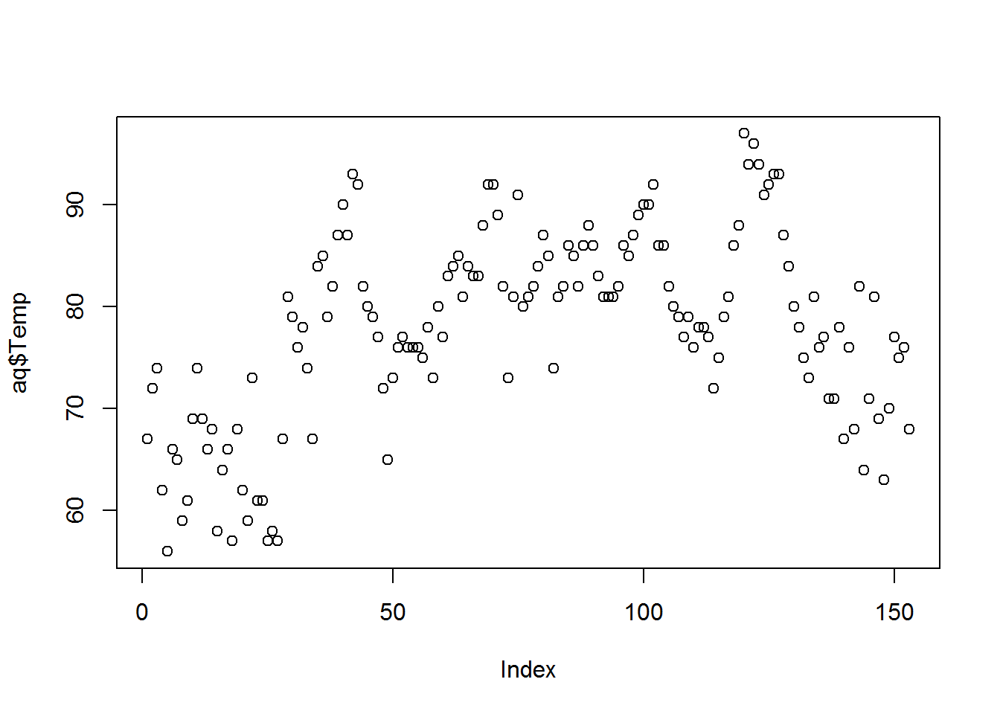
pch改点的形状，col改点的颜色
plot(x=aq$Temp,y=aq$Ozone)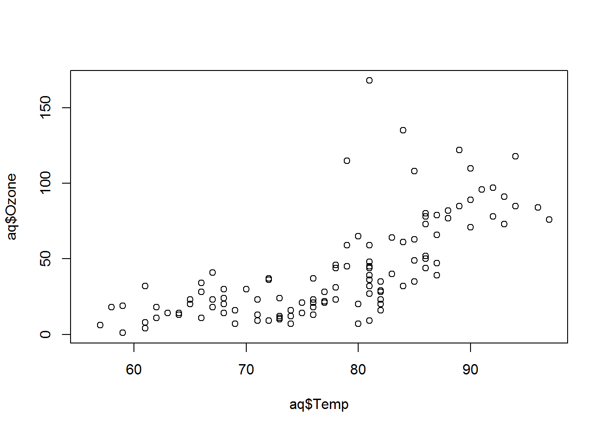
plot(x=aq$Temp,y=aq$Ozone,pch=18,col="blue")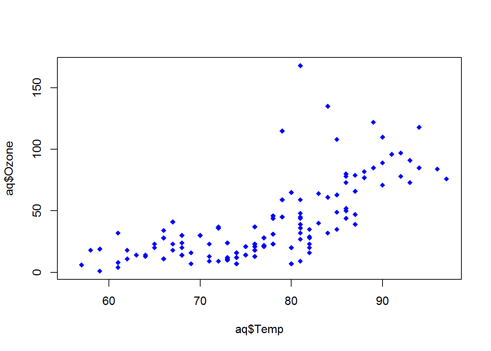
# install.packages("beginr")
library(beginr)
plotpch() #查看不同数字对应的形状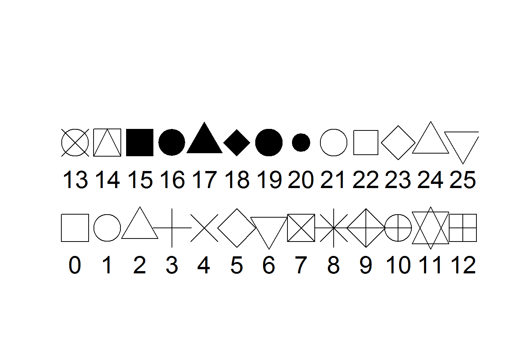
plotcolors() #查看色带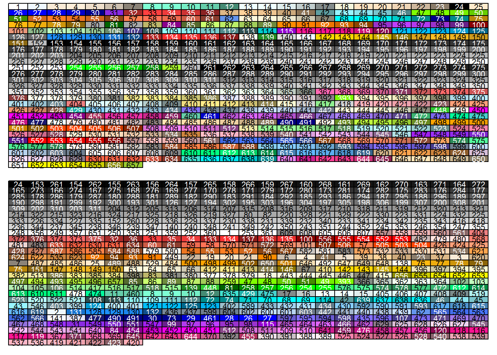
plotcolorbar() #彩虹色带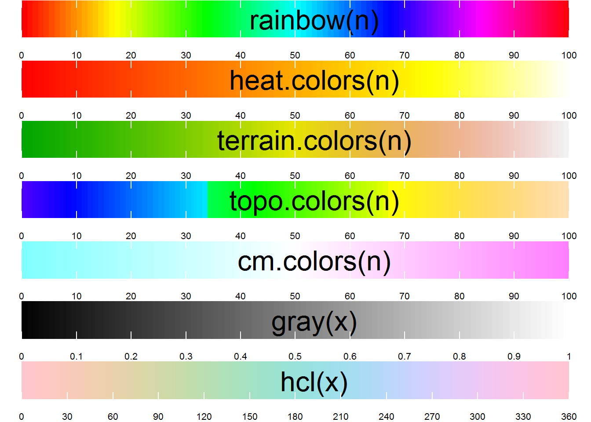
rainbow(100)[35]## [1] "#00FF0A"plot(x = aq$Temp, y = aq$Ozone, pch = 18, col = rainbow(100)[35])if语句使用
x <- -1
if(x>0){
print("positive")
}else{
print("zero or negative")
}## [1] "zero or negative"x1 <- 3
x1 <- ifelse(x1>0,"positive","zero or negative")
x1## [1] "positive"调整不同参数
plot(x = aq$Temp, y = aq$Ozone,
pch = ifelse(aq$Temp < 70, "小", "大"),
col = ifelse(aq$Ozone > 100, "red", "blue"),
cex = ifelse(aq$Solar.R > 200, 2, 1))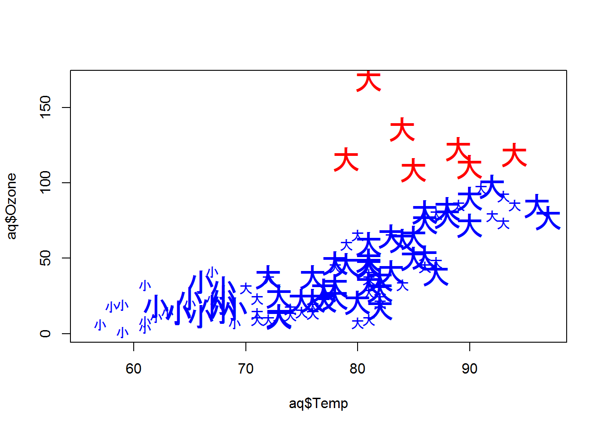
par(las = 1)
plot(x = aq$Temp, y = aq$Ozone, type = "h",
xlab = "Temperature", ylab = "Ozone")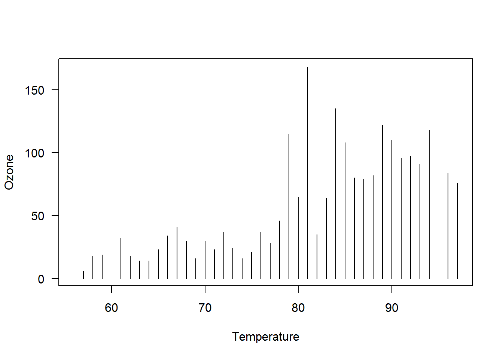
#plotcolorbar()
#plottype()
#plotlty()plot(x=aq$Temp,y=aq$Ozone,
xlim = c(50,100),ylim = c(30,50),
xlab = "Temperature",ylab = "Ozone",
pch = 16,
col = terrain.colors(100)[floor(aq$Solar.R-min(aq$Solar.R,na.rm = TRUE))])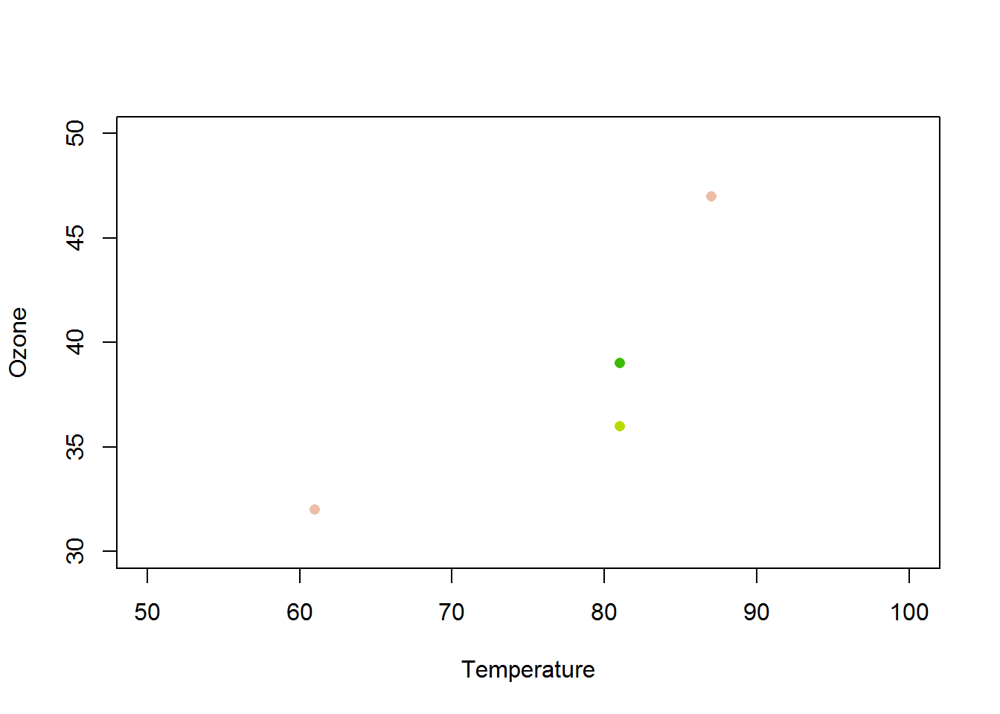
plot(x=aq$Temp,y=aq$Ozone,pch=18,col=ifelse(aq$Ozone>100,"red","green"))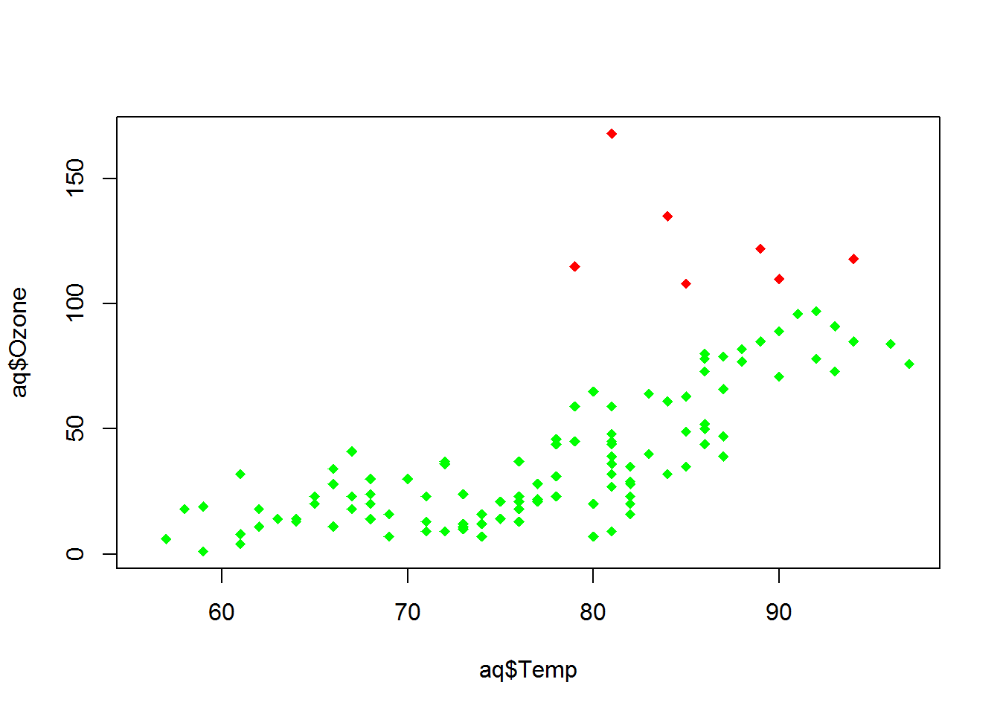
plot(x=aq$Temp,y=aq$Ozone,
pch=ifelse(aq$Temp<70,8,3),
col=ifelse(aq$Ozone>100,"red","green"),
cex=3)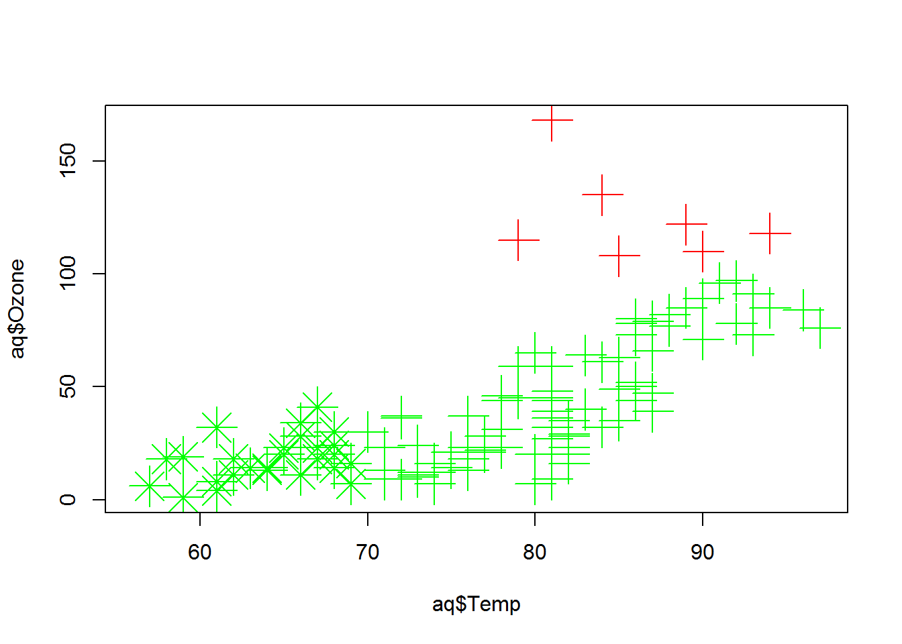
plot(x=aq$Temp,y=aq$Ozone,
pch=ifelse(aq$Temp<70,8,3),
col=ifelse(aq$Ozone>100,"red","green"),
cex=ifelse(aq$Solar.R>200,2,1))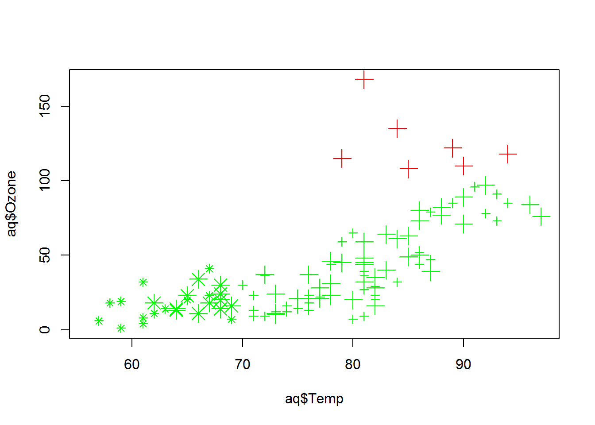